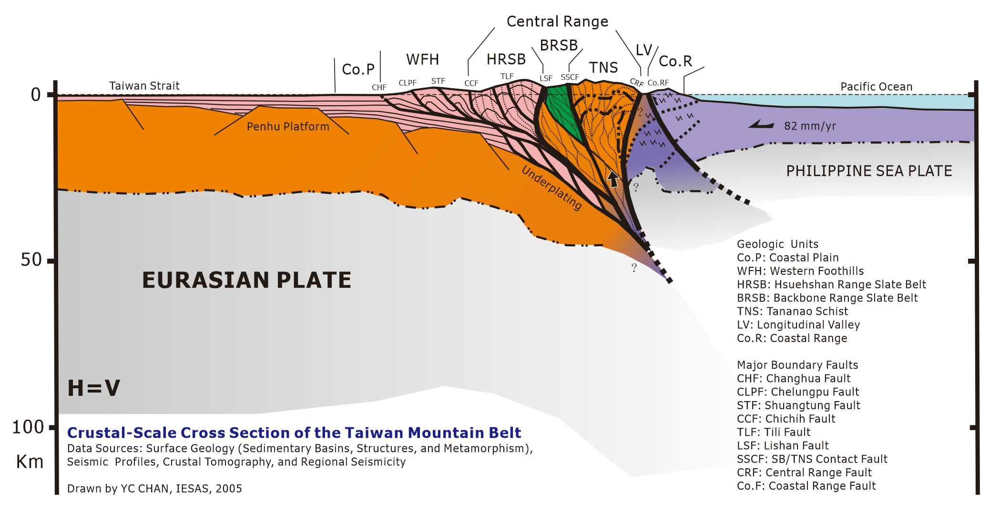

SRLab, IESAS
歡迎光臨我的網站！Welcome!
I am a geologist who is curious about the development of geologic structures and surface processes that shape the evolving landscapes on Earth. I like the idea of a multidisciplinary approach to understanding the fundamental processes from the Earth’s surface to the very bottom of the crust. Indeed, geologic deformation and surface evolution may lead to extremely complex natural phenomena, and we hope to observe, decipher and understand them by the basic laws of physics, chemistry, and most recent advances in remote sensing technologies. Field-based research is emphasized in the studies because ground truth observations are essential for testing hypotheses and understanding how nature really works.

Crustal-Scale Taiwan Mountain Belt with Geologic Units and Major Boundary Faults